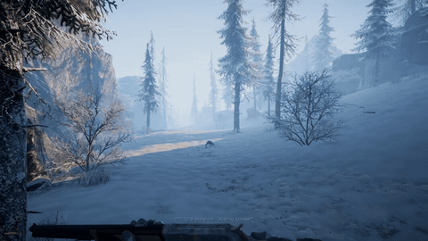
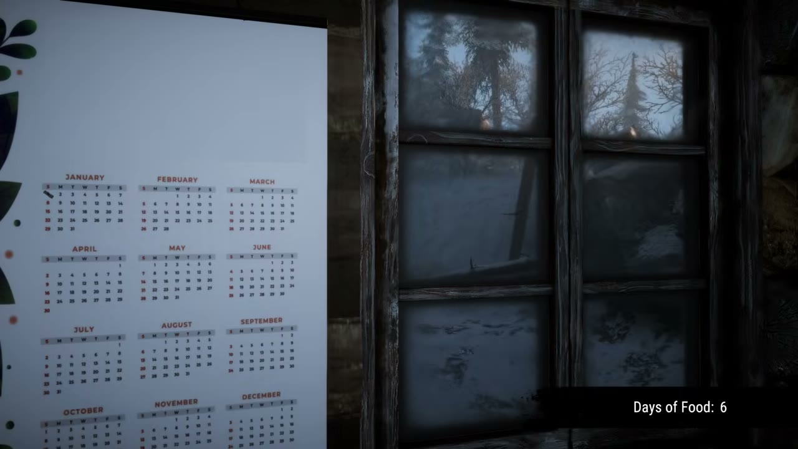
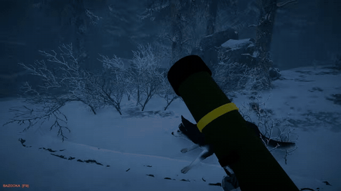
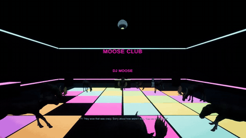

The Pale Mimic review: a bazooka moose hunt and a monster that copies voices

In Dark Snow Games' The Pale Mimic you're a fugitive hiding in the Alaskan wilderness with only your dog. A stalker in the woods prefers to avoid direct confrontation and lures you out by mimicking your dog's whine, the sound of prey or a familiar voice. It's a single-player story with an actual ending.

Strip the mods away and the game's own cabin routine and mimicry still work. A small deer was four days of food, and staring out the window while the calendar ticked on cost me three. One night the monster knocked in the voice of my radio contact, and I opened the door and died. After that my dog got sick, so I ran to a crashed truck for antibiotics. Later the monster copied the dog's noises outside while the real dog hid under the table. A radio caller named Kevin failed my test question about our contact's name, then roared.
My run was not a clean one. The cold open has me hunting moose with a bazooka mod, labelled BAZOOKA (F9) on screen. A Chaos mode toggle shows up on screen later too. Later came mod weapons: a revolver that fires explosive rockets, then a full bazooka. Mods also gave the monsters spoken lines, had my dog launch them into the sky, and gave him a mini rocket launcher on his back. A mod let me super-jump onto the cabin roof, and with it I jumped off the edge of the map on purpose into an empty void.
The game ends at a Moose Club: moose, my dog and the pale monster dancing on a neon DJ MOOSE floor. The first load spawned it high above the forest, so I reloaded it.
Played straight, I think the copied voices are the best idea in it, because every sound outside the cabin might be a trap. I also like that waiting costs you food. What I can't say is how a full run feels without a bazooka.

